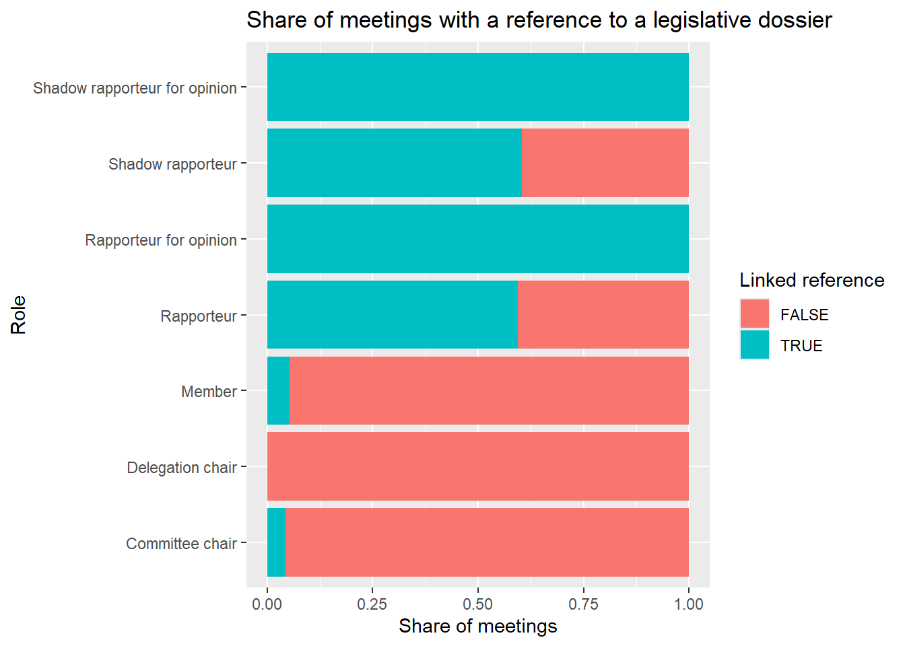

# install and load the necessary packages
# install.packages("tidyverse")
# install.packages("rio")
library(tidyverse)
library(rio)
# load the meeting data from GitHub
meetings <- import("https://github.com/ucrdatacenter/projects/raw/main/SSCPOLI302/2024h2/meetings.xlsx", setclass = "tbl_df") |>
mutate(meeting_date = as.Date(meeting_date))SSCPOLI302:
Analysis of MEPs (draft)
Fall 2024
Preparation
Before the workshop
To prepare for the class, please complete the following:
- read the “Setting up R” tutorial series (link)
- using the tutorials:
- install R and RStudio
- create a new R project for the EU Politics course
- install the
tidyversepackage
- bring your fully charged laptop and headphones to class
During the workshop
The Data Center workshops in this course have two components. First, you’ll follow a series of general tutorials that present the R skills you’ll need for the course. Second, you’ll apply these skills to a specific case study related to the course content.
Before you proceed to the case study below, please follow along with these tutorials:
Loading libraries and data
The data for this workshop is stored in an Excel file on the Data Center’s GitHub repository (link). The import() function from the rio package allows us to import an Excel file directly into R from a URL, without needing to download the file. Unfortunately during the importing the data, the meeting_date column is not automatically recognized as a date, therefore we need to convert it to a date format using the as.Date() function.
Describing the MEPs in the data
List and count the total number of MEPs in the data.
# get all MEP names, MEP ID's, and nationalities
MEPs <- meetings |>
distinct(member_name, member_id, country)
head(MEPs) # show the first few rows# A tibble: 6 × 3
member_name member_id country
<chr> <dbl> <chr>
1 GIESEKE Jens 124807 Germany
2 KÖRNER Moritz 197445 Germany
3 BLOSS Michael 197449 Germany
4 BURKHARDT Delara 197440 Germany
5 SCHREINEMACHER Liesje 197869 Netherlands
6 DELLI Karima 96868 France nrow(MEPs) # number of MEPs in the data[1] 640Not all of the 705 MEPs of term 2019-2024 are represented in the data.
Differences between member states
# count the number of MEPs per country
MEPs |>
count(country, sort = TRUE)# A tibble: 27 × 2
country n
<chr> <int>
1 Germany 98
2 France 73
3 Italy 65
4 Spain 56
5 Poland 40
6 Netherlands 29
7 Romania 28
8 Sweden 25
9 Hungary 21
10 Belgium 19
# ℹ 17 more rows# count the number of meetings per country
meetings |>
count(country, sort = TRUE)# A tibble: 27 × 2
country n
<chr> <int>
1 Germany 17231
2 France 9009
3 Spain 5665
4 Finland 4756
5 Netherlands 4645
6 Sweden 4575
7 Denmark 3036
8 Italy 2652
9 Belgium 2644
10 Austria 2106
# ℹ 17 more rowsWe can show differences between countries by plotting the number of meetings per country on a bar chart.
# plot the number of meetings per country
meetings |>
count(country, sort = TRUE) |>
ggplot() +
geom_col(aes(x = n, y = country)) +
labs(title = "Number of meetings per country between 2019-2024",
x = "Country",
y = "Number of meetings")We can improve the display by arranging the bars based on the number of meetings with the reorder() function.
# plot the number of meetings per country
meetings |>
count(country, sort = TRUE) |>
ggplot() +
geom_col(aes(x = n, y = reorder(country, n))) +
labs(title = "Number of meetings per country between 2019-2024",
x = "Country",
y = "Number of meetings")In this figure, the largest countries have the most meetings, which is expected given that they have more MEPs. To account for this difference, we can instead plot the average number of meetings per MEP in each country, by dividing the number of meetings by the number of MEPs.
# average number of meetings per MEP in each country
countries <- meetings |>
group_by(country) |>
summarize(n_meetings = n(),
n_meps = n_distinct(member_id),
avg_meetings = n_meetings / n_meps)To visualize differences between countries in the average number of meetings of their MEPs, we can present the data on a bar chart.
# plot the average number of meetings per MEP for each country
countries |>
ggplot() +
geom_col(aes(x = avg_meetings, y = reorder(country, avg_meetings))) +
labs(title = "Average number of meetings per MEP between 2019-2024",
x = "Country",
y = "Average number of meetings per MEP")This figure tells us more about the activity of MEPs in each country, as it accounts for the number of MEPs in each country. We can see that MEPs from Finland are particularly active. On the other hand, Cyprus not only has the fewest MEPs but also the fewest meetings per MEP.
Meeting timelines
Some countries have more MEPs than their EP seats. This means that an EP member did not finish their term and was replaced by another, such as the case of Liesje Schreinemacher.
We can plot the distribution of meetings over time with a histogram. A histogram aggregates the data into bins and counts the number of observations in each bin. In this case, we set each bin to be 30 days wide.
# meeting dates of Liesje Schreinemacher
meetings |>
filter(member_name == "SCHREINEMACHER Liesje") |>
ggplot() +
geom_histogram(aes(x = meeting_date), binwidth = 30) +
labs(title = "Meeting activity of Liesje Schreinemacher during her
MEP career",
x = "Date",
y = "Frequency of meetings")We can also compare the density of Liesje Schreinemacher’s meetings to the overall meeting density of the EP. We will do this by changing a few things within the code.
First, we take the meetings dataset and define a new variable MEP that indicates whether the MEP is Liesje Schreinemacher or not. Then, we plot the histogram of the density of meetings for both Liesje Schreinemacher and the other MEPs. We set the fill of the histogram to be different depending on whether the MEP is Liesje Schreinemacher or not.
meetings |>
mutate(MEP = ifelse(member_name == "SCHREINEMACHER Liesje",
"Liesje Schreinemacher",
"Other MEPs")) |>
ggplot() +
geom_histogram(aes(x = meeting_date, fill = MEP), binwidth = 30) +
labs(title = "Meeting activity of Liesje Schreinemacher compared to other MEPs",
x = "Date",
y = "Frequency of meetings")By default the histogram shows the count of meetings. Compared to the sum all MEPs, Liesje Schreinemacher had so few meetings that her histogram is barely visible. By specifying the y aesthetic to be a rescaled version of the count (so that the highest value within a group is 1), we override this default behavior and make the comparison more informative. We accomplish this by specifying after_stat(ncount) as the y aesthetic. In addition, we can put the bars of the groups next to each other instead of stacking them by specifying position = "dodge".
meetings |>
mutate(MEP = ifelse(member_name == "SCHREINEMACHER Liesje",
"Liesje Schreinemacher",
"Other MEPs")) |>
ggplot() +
geom_histogram(aes(x = meeting_date, y = after_stat(ncount), fill = MEP),
binwidth = 30, position = "dodge") +
labs(title = "Meeting activity of Liesje Schreinemacher compared to other MEPs",
x = "Date",
y = "Frequency of meetings (rescaled)")As we can see, Liesje Schreinemacher’s activity stops about midway through 2022, which is when she exited the EP.
Differences between political groups
First, we can compare the number of meetings from each political group who declared meetings compared to the total number of seats of each group. Calculating the average number of meetings per seat in the political groups helps us see which group has held the most meetings on average while accounting for their size. We use seats because only one MEP can occupy a seat at a time, therefore this definition accounts for groups that saw many MEP replacements and thus have more MEPs than seats in their data.
# define the number of seats per group (as of May 2024) and the position of each group on the left-right spectrum
seats <- tribble(
~political_group, ~seats, ~leftright,
"EPP", 176, 5,
"S&D", 139, 3,
"Renew", 102, 4,
"Greens", 72, 2,
"ECR", 69, 6,
"Non-attached", 61, 8,
"ID", 49, 7,
"the Left", 37, 1)
# count the number of meetings per political group in the meeting data
meetings_per_seat <- meetings |>
count(political_group) |>
# merge with the number of seats per group
left_join(seats, by = "political_group") |>
# calculate the number of meetings per seat
mutate(meetings_per_seat = n / seats)We can compare visualizations for the number of MEPs per political group and the average number of meetings per seat in each political group using bar charts.
# number of MEP seats per political group
meetings_per_seat |>
ggplot() +
geom_col(aes(x = political_group, y = seats)) +
labs(title = "Number of MEPs per political group in May 2024",
x = "Political group",
y = "Number of MEPs")To improve the quality of the graph, we can organize the bars based on the political orientation of the political group. In addition, we can specify the colors of the bars to match those of their political groups. We define these colors in a separate vector and use the scale_fill_manual() function to apply them to the plot.
# define political group colors
colors <- c("EPP" = "deepskyblue",
"S&D" = "red",
"Renew" = "gold",
"Greens" = "forestgreen",
"ECR" = "deepskyblue4",
"ID" = "darkblue",
"the Left" = "darkred",
"Non-attached" = "grey")
# number of MEP seats per political group
meetings_per_seat |>
ggplot() +
geom_col(aes(x = reorder(political_group, leftright), y = seats,
fill = political_group),
# color the borders of the bars black and hide the legend
color = "black", show.legend = FALSE) +
labs(title = "Number of MEPs per political group in May 2024",
x = "Political group",
y = "Number of MEPs") +
scale_fill_manual(values = colors)Now compare the previous plot to the average number of meetings per seat in each political group.
# average number of meetings per seat per political group
meetings_per_seat |>
ggplot() +
geom_col(aes(x = reorder(political_group, leftright),
y = meetings_per_seat, fill = political_group),
color = "black", show.legend = FALSE) +
labs(title = "Average number of reported meetings per seat",
x = "Political group",
y = "Number of meetings per seat") +
scale_fill_manual(values = colors)Role distributions
Meetings also differ based on the roles of the MEP in the meeting. First, let’s compare the number of meetings for each role.
meetings |>
count(member_capacity, sort = TRUE)# A tibble: 7 × 2
member_capacity n
<chr> <int>
1 Member 45560
2 Shadow rapporteur 10064
3 Rapporteur 9009
4 Committee chair 2207
5 Shadow rapporteur for opinion 824
6 Rapporteur for opinion 753
7 Delegation chair 175We can combine this information with the political group of the MEP to see which combination of political groups and roles are most common.
meetings |>
count(political_group, member_capacity, sort = TRUE)# A tibble: 53 × 3
political_group member_capacity n
<chr> <chr> <int>
1 S&D Member 12955
2 Greens Member 11435
3 Renew Member 9547
4 EPP Member 7257
5 S&D Rapporteur 3184
6 EPP Rapporteur 2684
7 Renew Shadow rapporteur 2480
8 S&D Shadow rapporteur 2314
9 Greens Shadow rapporteur 2257
10 the Left Member 2013
# ℹ 43 more rowsFor our purposes the only relevant meetings are the ones attached to a legislative dossier. This is important for full transparency about the legislative dossier their meeting relates to.
Let’s look at what share of meetings has a reference to a legislative dossier per role. We first count the number of meetings with and without added references per member role. We divide these counts with the total number of meetings per role to get the share of meetings with a reference, and plot these results on a bar chart.
meetings |>
mutate(reference = !is.na(procedure_reference)) |>
count(member_capacity, reference) |>
group_by(member_capacity) |>
mutate(reference_share = n / sum(n)) |>
ggplot() +
geom_col(aes(x = reference_share,
y = member_capacity,
fill = reference)) +
labs(title = "Share of meetings with a reference to a legislative dossier",
x = "Share of meetings",
y = "Role",
fill = "Linked reference")
Now let’s plot the distribution of political groups within each role, focusing only on meetings with a legislative dossier reference.
meetings |>
drop_na(procedure_reference) |>
count(political_group, member_capacity) |>
ggplot() +
geom_col(aes(x = n, y = member_capacity, fill = political_group)) +
labs(title = "Meeting frequency per role and political group",
x = "Number of meetings",
y = "Role",
fill = "Political group") +
scale_fill_manual(values = colors)